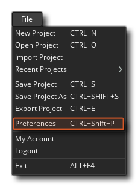

Das Preferences-Fenster ist ein wesentlicher Bestandteil von GameMaker Studio 2, da Sie dort Ihre Erfahrung mit der IDE einrichten und anpassen sowie ein bestimmtes Plattform-SDK usw. einrichten können. In diesem Abschnitt werden die IDE-spezifischen Bereiche von das Einstellungsfenster - für die einzelnen Zielplattformen siehe den Abschnitt Zielplattformen Einstellungen. Beachten Sie, dass Sie nach dem Ändern der Einstellungen in diesem Fenster auf die Schaltfläche Übernehmen klicken müssen, damit sie wirksam werden.
Wenn Sie nach dem Ändern der Optionen zum Anpassen von GameMaker Studio 2 an Ihre eigenen Vorlieben die Einstellungen sichern möchten, die Sie festgelegt haben, müssen Sie in den Ordner wechseln %AppData%/GameMakerStudio2/<your_account_name>/ Kopieren Sie anschließend die folgenden zwei Dateien an einen sicheren Ort:
Wenn Sie die geänderten Einstellungen jedoch zurücksetzen möchten, klicken Sie oben im Fenster auf die Schaltfläche Standardwerte wiederherstellen. Beachten Sie, dass dadurch nur die Standardeinstellungen für den Abschnitt wiederhergestellt werden, der gerade bearbeitet wird.
Sie können die Einstellungen von GameMaker Studio 2 über das Menü Datei oben links in der IDE öffnen: 
Sobald das Fenster Einstellungen geöffnet ist, haben Sie die folgenden Optionen:
Beachten Sie, dass es auch einen Abschnitt für plattformspezifische Einstellungen gibt, der hier in diesem Abschnitt des Handbuchs aufgeführt ist.